<div class="sidenav-container">
        <div class="d-logo"></div>
        <div class="d-logo-small"></div>
        <ul *ngIf="sideNav" class="list-unstyled sidenav-links">
                <li><a href="/dashboard" routerLinkActive="active" matTooltip="View a snapshot of all your KPIs by clicking here
                        " *ngIf="dashboard?.actionUrl=='dashboard'" [matTooltipPosition]="'left'"
                                matTooltipClass="custom-tooltip-blue" routerLink="/dashboard"><i
                                        class="icons icon-home btn"></i>
                                <span>Dashboard</span></a></li>
                <li><a href="#" routerLinkActive="active"
                                matTooltip="Add New Products (and view products) by clicking here "
                                *ngIf="productsMenu?.actionUrl=='products'" [matTooltipPosition]="'left'"
                                routerLink="/products"><i class="image-icon btn"></i> <span>Products</span></a>
                </li>
                <li><a href="#" routerLinkActive="active" matTooltip="Define your region like USA or UK, by clicking here
                        " *ngIf="regionMenu?.actionUrl=='region-management'" [matTooltipPosition]="'left'"
                                routerLink="/region-management"><i class="icons icon-location-pin btn"></i> <span>Region
                                        Management</span></a></li>
                <li><a href="#" routerLinkActive="active" matTooltip="Add your workstreams by clicking here
                        " *ngIf="workstreamMenu?.actionUrl=='workstream-management'" [matTooltipPosition]="'left'"
                                routerLink="/workstream-management"><i class="icons icon-organization btn"></i>
                                <span>Workstream
                                        Management</span></a></li>
                <li><a href="/role-management" routerLinkActive="active" matTooltip="Define your team roles by clicking here
                        " *ngIf="roleMenu?.actionUrl=='role-management'" [matTooltipPosition]="'left'"
                                routerLink="/role-management"><i class="icons icon-user-following btn"></i> <span>Role
                                        Management</span></a></li>
                <li><a href="#" routerLinkActive="active" matTooltip="Add or Remove team members by clicking here
                        " *ngIf="userMenu?.actionUrl=='user-management'" [matTooltipPosition]="'left'"
                                routerLink="/user-management"><i class="icons icon-user btn"></i> <span>User
                                        Management</span></a></li>
                <li><a href="#" routerLinkActive="active" matTooltip="View communication overview by clicking here"
                                *ngIf="communicationMenu?.actionUrl=='communication'" [matTooltipPosition]="'left'"
                                routerLink="/communication"><i class="icons icon-shuffle btn"></i>
                                <span>Communication</span></a></li>
                <li><a href="#" routerLinkActive="active"
                                matTooltip="View status of your project in Gantt charts, Kanban charts & task list summary by clicking here"
                                *ngIf="trackMenu?.actionUrl=='track-monitor'" [matTooltipPosition]="'left'"
                                routerLink="/track-monitor"><i class="icons icon-chart btn"></i> <span>Track &
                                        Monitor</span></a></li>


                <li><a href="#" routerLinkActive="active" matTooltip="System Management"
                                *ngIf="systemMenu?.actionUrl=='system-management'" [matTooltipPosition]="'left'"
                                routerLink="/system-management"><i class="icons icon-settings btn"></i> <span>System
                                        Management</span></a></li>
        </ul>
        <ul *ngIf="sideNav==false" class="list-unstyled sidenav-links">
                <li><a href="/dashboard" routerLinkActive="active" matTooltip="View a snapshot of all your KPIs by clicking here
                        " [matTooltipPosition]="'left'" (click)="sidNavPermissionList()"
                                matTooltipClass="custom-tooltip-blue" routerLink="/dashboard"><i
                                        class="icons icon-home btn"></i>
                                <span>Dashboard</span></a></li>
                <li><a href="#" routerLinkActive="active"
                                matTooltip="Add New Products (and view products) by clicking here "
                                [matTooltipPosition]="'left'" (click)="sidNavPermissionList()" routerLink="/products"><i class="image-icon btn"></i> <span>Products</span></a>
                </li>
                <li><a href="#" routerLinkActive="active" matTooltip="Define your region like USA or UK, by clicking here
                        " [matTooltipPosition]="'left'" (click)="sidNavPermissionList()"
                                routerLink="/region-management"><i class="icons icon-location-pin btn"></i> <span>Region
                                        Management</span></a></li>
                <li><a href="#" routerLinkActive="active" matTooltip="Add your workstreams by clicking here
                        " (click)="sidNavPermissionList()" [matTooltipPosition]="'left'"
                                routerLink="/workstream-management"><i class="icons icon-organization btn"></i>
                                <span>Workstream
                                        Management</span></a></li>
                <li><a href="/role-management" routerLinkActive="active" matTooltip="Define your team roles by clicking here
                        " (click)="sidNavPermissionList()" [matTooltipPosition]="'left'"
                                routerLink="/role-management"><i class="icons icon-user-following btn"></i> <span>Role
                                        Management</span></a></li>
                <li><a href="#" routerLinkActive="active" matTooltip="Add or Remove team members by clicking here"
                                [matTooltipPosition]="'left'" (click)="sidNavPermissionList()"
                                routerLink="/user-management"><i class="icons icon-user btn"></i> <span>User
                                        Management</span></a></li>
                <li><a href="#" routerLinkActive="active" matTooltip="View communication overview by clicking here"
                                [matTooltipPosition]="'left'" (click)="sidNavPermissionList()"
                                routerLink="/communication"><i class="icons icon-shuffle btn"></i>
                                <span>Communication</span></a></li>
                <li><a href="#" routerLinkActive="active"
                                matTooltip="View status of your project in Gantt charts, Kanban charts & task list summary by clicking here"
                                [matTooltipPosition]="'left'" (click)="sidNavPermissionList()"
                                routerLink="/track-monitor"><i class="icons icon-chart btn"></i> <span>Track &
                                        Monitor</span></a></li>

                <li><a href="#" routerLinkActive="active" matTooltip="System Management"
                                (click)="sidNavPermissionList()" [matTooltipPosition]="'left'"
                                routerLink="/system-management"><i class="icons icon-settings btn"></i> <span>System
                                        Management</span></a></li>
        </ul>

        <div class="last-login"><span>Last Login @ {{loginTime?.dateTime | date :'dd-MM-yyy hh:mm:ss a'}}</span></div>
</div>